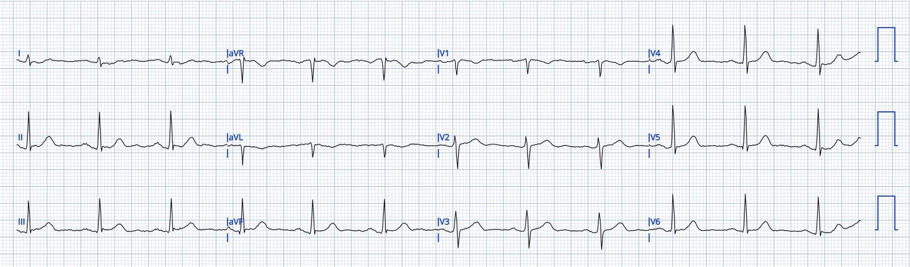
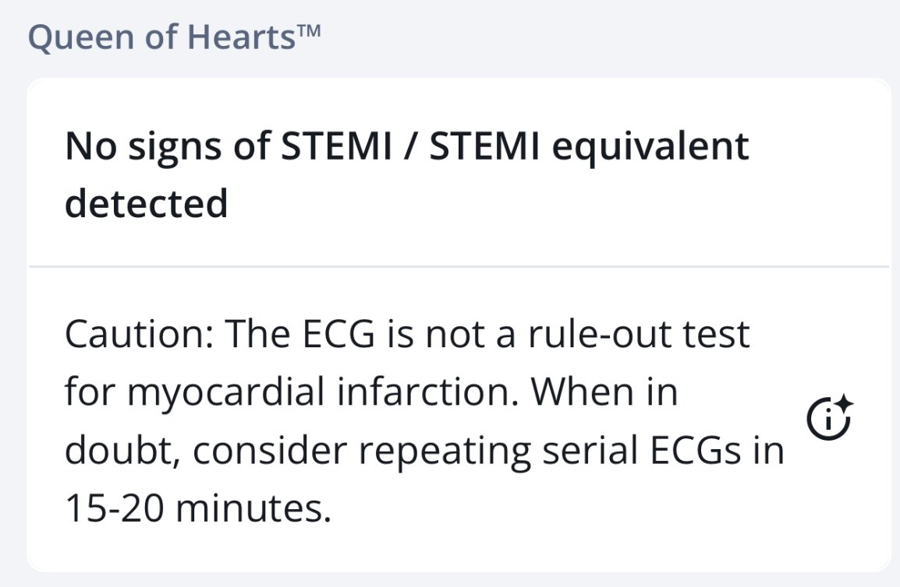
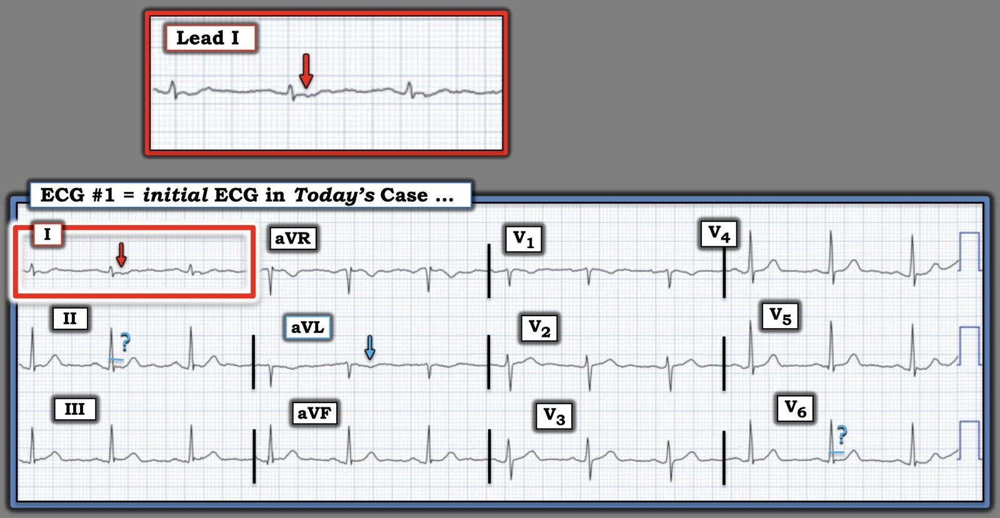

13/05/2026 — Đau ngực ở một bệnh nhân ngoài 50 tuổi. Các điện tâm đồ liên tiếp quan trọng như thế nào ở bệnh nhân còn đau dai dẳng?
Bản dịch tiếng Việt của bài "Chest pain in a 50-something. How important are serial ECGs in patients with persistent pain?" – Dr. Smith’s ECG Blog. Giữ nguyên toàn bộ 3 hình ảnh của bản gốc.
Một người đàn ông ngoài 50 tuổi khởi phát đau ngực, sau đó cơn đau tự hết. Khoảng một giờ sau, đau ngực tái phát và ông đến khoa cấp cứu (ED). Khoảng 30 phút sau khi khởi phát đau ngực, điện tâm đồ này được ghi. (Nó được gửi cho tôi mà không kèm thông tin gì.)
Bạn nghĩ sao?


Người gửi đưa ra diễn giải như sau:
“OMI thành dưới giai đoạn sớm? Tôi thấy ST chênh lên khá kín đáo, nhưng lại có sóng T đảo ngược ở aVL và chuyển đạo I. Tôi cảm thấy ở aVL điều đó không có nhiều ý nghĩa vì QRS cũng âm, nhưng còn chuyển đạo I thì sao? Ở đó QRS dương, sóng T đảo ngược và có ST chênh xuống nhẹ.”
Trả lời của tôi: “Tôi đồng ý rằng nó rất đáng ngờ, nhưng tôi cũng đồng ý rằng nó chưa đủ để chẩn đoán. Ca rất khó. Hãy tiếp tục ghi các điện tâm đồ liên tiếp (serial ECGs). Tôi sẽ cho nó chạy qua Queen of Hearts.” Tôi cũng nghĩ: Tôi đặc biệt lo ngại về đoạn ST chênh xuống ở chuyển đạo I, với sóng T dạng xuống-lên (down-up).
Tôi đưa bản ghi này cho nhóm tin nhắn “EKG Nerdz” của tôi mà không kèm thông tin gì và tất cả họ đều gọi đây là OMI.
Bình luận: trục QRS đúng bằng 90 độ (hướng về aVF và vuông góc với chuyển đạo I). Vì lý do này, ở aVL, QRS âm, và sóng T cũng âm. Do đó, sóng T âm ở aVL ít có ý nghĩa hơn so với trong trường hợp khác. Tuy nhiên, ở chuyển đạo I, QRS đẳng điện (phần dương bằng phần âm) nên sóng T lẽ ra phải dương, và đoạn ST cũng phải đẳng điện. Thế nhưng, ST lại chênh xuống và sóng T có dạng xuống-lên.
Diễn giải của Mô hình AI điện tâm đồ PMCardio Queen of Hearts:


Lưu ý rằng Queen cũng khuyến cáo ghi các điện tâm đồ liên tiếp mỗi 15-20 phút.
Không có điện tâm đồ ghi lại nào được thực hiện.
Ca bệnh tiếp diễn:
Xét nghiệm troponin được lấy 10 phút sau điện tâm đồ (45 phút sau khi đau ngực tái phát): kết quả là 11 ng/L (URL — giới hạn tham chiếu trên — của xét nghiệm Siemens Atellica này là 53 ng/L). Xét nghiệm troponin lần 2 được lấy một giờ sau đó, kết quả là 34 ng/L. Không có điện tâm đồ ghi lại. Với xét nghiệm này, mức thay đổi (delta) trong một giờ > 12 ng/L (trong ca này là 23 ng/L) gần như đủ để chẩn đoán xác định nhồi máu cơ tim cấp, như dưới đây:
Dựa trên phác đồ 0/1 giờ của Hội Tim mạch châu Âu (ESC), bệnh nhân này có xác suất 69.4% đến 75.6% bị nhồi máu cơ tim cấp (AMI) theo kết quả thẩm định (adjudicated). Kết quả của bệnh nhân rơi thẳng vào Vùng Xác nhận chẩn đoán (Rule-In Zone) do mức thay đổi tuyệt đối của troponin vượt quá các ngưỡng chẩn đoán đã được kiểm định. Xác suất tổn thương cơ tim cấp còn cao hơn, ở mức 95.7%. Trong bối cảnh đau ngực cấp, mọi tổn thương cơ tim đều là nhồi máu cơ tim cấp cho đến khi chứng minh được điều ngược lại.
Bệnh nhân không được gắn monitor theo dõi. Khoảng 2 giờ sau khi đến viện, bệnh nhân được phát hiện bất tỉnh và mất mạch. Bệnh nhân được xác định đang rung thất. Các biện pháp hồi sức không thành công.
Có phải cơn ngưng tim này là do OMI cấp không? Gần như chắc chắn, dù không thể chứng minh. 1. Bệnh cảnh đáng ngờ, 2. điện tâm đồ ban đầu RẤT đáng ngờ, 3. troponin tăng dần đủ chẩn đoán nhồi máu cơ tim, rồi 4. rung thất.
Tôi đưa điện tâm đồ này, không kèm thông tin gì, cho một bác sĩ cấp cứu cộng đồng được đào tạo rất bài bản. Anh ấy nói rằng anh sẽ cho bệnh nhân ngồi ở phòng chờ.
Sau khi tôi kể cho anh ấy chuyện đã xảy ra, anh ấy đồng ý rằng ghi điện tâm đồ mỗi 15 phút là điều thiết yếu.
Những điểm cần học:
- Luôn gắn monitor theo dõi cho bệnh nhân đau ngực mà cơn đau còn kéo dài dai dẳng.
- Học cách nhận ra các dấu hiệu kín đáo của OMI có thể có.
- Luôn ghi các điện tâm đồ liên tiếp, dù có hay không có các dấu hiệu kín đáo.
- Bất kỳ mức troponin tăng dần nào ở bệnh nhân đau ngực cũng là nhồi máu cơ tim cho đến khi chứng minh được điều ngược lại.
Ken còn nhiều điểm quan trọng khác ở phần dưới.
= = =
==================================
BÌNH LUẬN CỦA TÔI, bởi KEN GRAUER, MD (13/5/2026):
Tôi luôn cố gắng xem những ca như ca này trước khi đọc tiếp để biết điều gì đã xảy ra với bệnh nhân. Do đó — Bình luận của tôi dưới đây dựa trên nhận định của tôi về điện tâm đồ ban đầu hôm nay, khi chỉ biết đoạn bệnh sử ngắn gọn trình bày trong đoạn mở đầu của Dr. Smith. Bằng cách này — tôi có thể khách quan hơn khi xem xét các dấu hiệu trên điện tâm đồ — bởi vì, “nhìn lại thì luôn chính xác 100% qua ‘kính hồi tưởng’ (retrospectoscope)” (tức là, Bình luận khi nhìn lại thì thật DỄ, khi bạn đã biết trước câu trả lời về điều đã xảy ra với bệnh nhân).
- Thực tế lâm sàng: Phần lớn (nếu không muốn nói là tất cả) chúng ta đều đã rút ra bài học từ trải nghiệm đau đớn khi được giao một bệnh nhân có vẻ “ổn” — nhưng trong lúc chờ giường ở một khoa cấp cứu ED (Emergency Department) đông đúc — bệnh nhân đột ngột ngưng tim và tử vong trước khi được đánh giá đầy đủ.
- Vì vậy — Chúng ta cần rút kinh nghiệm từ những ca như ca này. Do đó tôi tập trung Bình luận của tôi vào việc củng cố các Điểm cần học quan trọng đã nêu ở trên trong phần bàn luận của Dr. Smith.
= = =
— Điều gì đã sai? —
Chúng ta học được bằng cách quay lại các chi tiết cụ thể của ca bệnh — và tự vấn khi suy ngẫm xem lần sau có thể làm gì khác đi.
i) BỆNH SỬ đã không được đánh giá đầy đủ …
- Người đàn ông 50 tuổi trong ca hôm nay có một cơn CP mới khởi phát (Chest Pain — đau ngực) — cơn này sau đó tự hết — nhưng rồi tái phát một giờ sau, khiến ông phải đến ED.
- Trong quá trình tiến triển của một biến cố cấp — việc động mạch “thủ phạm” tự phát tái tưới máu là thường gặp. Khi điều này xảy ra — CP của bệnh nhân biến mất (hoặc ít nhất là giảm đi) — và các chỉ dấu thiếu máu cục bộ cấp trên điện tâm đồ có thể phần lớn (hoặc thậm chí hoàn toàn) mất đi.
- Vấn đề là mảng xơ vữa không ổn định sau đó có thể tự phát tắc lại vào bất kỳ lúc nào — điều thường được đánh dấu bằng việc CP quay lại và các bất thường điện tâm đồ quay lại.
- Ở khoảng giữa quá trình tắc động mạch vành cấp (được đánh dấu bằng ST chênh lên) và tái tưới máu tự phát (được đánh dấu bằng ST chênh xuống và sóng T đảo ngược) — có thể thấy một hình ảnh điện tâm đồ gọi là “giả bình thường hóa” (pseudo-normalization), trong đó điện tâm đồ có thể trông gần như bình thường.
- Vì bệnh sử trong ca hôm nay có khả năng “khớp” với kịch bản trên — người thầy thuốc cần nhận biết các bất thường điện tâm đồ rất kín đáo có thể thấy nếu điện tâm đồ ban đầu được ghi trong giai đoạn giả bình thường hóa.
ii) Troponin có thể chưa tăng ở giai đoạn sớm …
- hs-Troponin lần 1 (và thậm chí lần 2) không nhất thiết tăng dù có OMI cấp. Điều này đặc biệt đúng nếu thời gian tắc động mạch vành cấp ngắn — như dường như đã xảy ra trong ca hôm nay, khi cơn CP ban đầu của bệnh nhân tự hết.
- Ở bệnh nhân có triệu chứng đáng lo ngại — bất kỳ mức tăng Troponin nào (dù rất nhỏ) cũng có ý nghĩa.
- Đôi khi — 2 giá trị Troponin đầu tiên có thể đều nằm trong giới hạn URL (Upper Reference Limit — giới hạn tham chiếu trên) — mà các giá trị này không nhất thiết cho thấy kết quả bình thường. Như Dr. Smith và Dr. McLaren đã bàn trong bài ngày 24 tháng Ba năm 2023 — nếu delta (tức là, mức thay đổi) giữa các lần đo Troponin liên tiếp tăng đáng kể (và delta Troponin trong ca hôm nay đã tăng hơn gấp đôi, từ 13 lên 33 ng/L ở lần Troponin thứ 2 được làm chỉ 1 giờ sau) — thì giá trị delta tăng dần này cần được xem là một kết quả bất thường.
iii) Các bất thường điện tâm đồ có thể rất kín đáo …
Để rõ hơn, trong Hình 1 — tôi đã chép lại và đánh dấu điện tâm đồ hôm nay.
- Nhịp xoang. Tất cả các khoảng (PR,QRS,QTc) và trục mặt phẳng trán đều bình thường. Không có lớn buồng tim.
- Không có sóng Q — và tăng tiến sóng R bình thường.
- Tôi đã làm nổi bật một số bất thường ST-T kín đáo (tức là, đoạn ST hơi thẳng đuỗn ở chuyển đạo II và V6 — và sóng T đảo ngược ở chuyển đạo aVL) — nhưng đây là những thay đổi không đặc hiệu (và không đủ chẩn đoán) mà từ đó không thể rút ra kết luận chắc chắn nào (Tôi thấy đáy của sóng T đảo ngược ở chuyển đạo aVL hơi rộng hơn dự kiến so với biên độ nhỏ của QRS ở chuyển đạo này — nhưng vẫn không đủ chẩn đoán).
- Dù vậy, “con mắt” của tôi ngay lập tức bị thu hút vào ST-T ở chuyển đạo I (trong hình chữ nhật ĐỎ). Nhận định tổng thể của tôi về bản ghi này giống hệt nhận định của bác sĩ lâm sàng đã gửi ca hôm nay, của Dr. Smith và của các đồng nghiệp EKG Nerdz ==> Mặc dù hình dạng ST-T không đủ chẩn đoán ở 11/12 chuyển đạo — ST-T ở chuyển đạo I lẽ ra không được trông như thế này!
- Để rõ hơn, trong Hình 1 — tôi đã phóng to chuyển đạo I; dù có một số biến dạng do nhiễu với ít nhiều khác biệt về chi tiết ST-T — mỗi phức bộ trong 3 phức bộ ở chuyển đạo I đều cho thấy đoạn ST dẹt kèm ST chênh xuống nhẹ.
- Hình dạng quan trọng hơn mức độ lệch của ST trên bản ghi này (nhất là khi QRS ở chuyển đạo I rất nhỏ).
- Điều cốt lõi: Như Dr. Smith đã nêu — Mặc dù điện tâm đồ #1 không đủ chẩn đoán — đây là một bản ghi rất đáng ngờ khi xét trong bối cảnh bệnh sử lâm sàng (khi bệnh nhân hôm nay có khả năng đến ED trong khoảng thời gian có thể tương ứng với giai đoạn “giả bình thường hóa”) — đặc biệt khi có delta Troponin tăng dần.
= = =
Hình 1: Tôi đã đánh dấu điện tâm đồ ban đầu trong ca hôm nay.


= = =
— Cần làm gì? —
Câu trả lời rất đơn giản: Khi không chắc chắn liệu bệnh nhân của bạn có (hay không) đang “trong quá trình” tiến triển cấp tính thành OMI:
- Ghi lặp lại điện tâm đồ thứ 1 trong vòng 10-20 phút. Sau đó tiếp tục ghi lại điện tâm đồ thường xuyên cho đến khi có thể khẳng định chắc chắn nhu cầu thông tim sớm (hoặc cho đến khi bạn biết rằng không cần thông tim sớm).
- Siêu âm tim tại giường (vì một rối loạn vận động thành khu trú sẽ khẳng định nhu cầu thông tim sớm).
- CP kéo dài kèm Troponin bất thường là chỉ định thông tim sớm.
- Và, trong lúc chờ đợi (như Dr. Smith đã nêu) — Hãy giữ bệnh nhân trên monitor theo dõi!
= = =
= = =